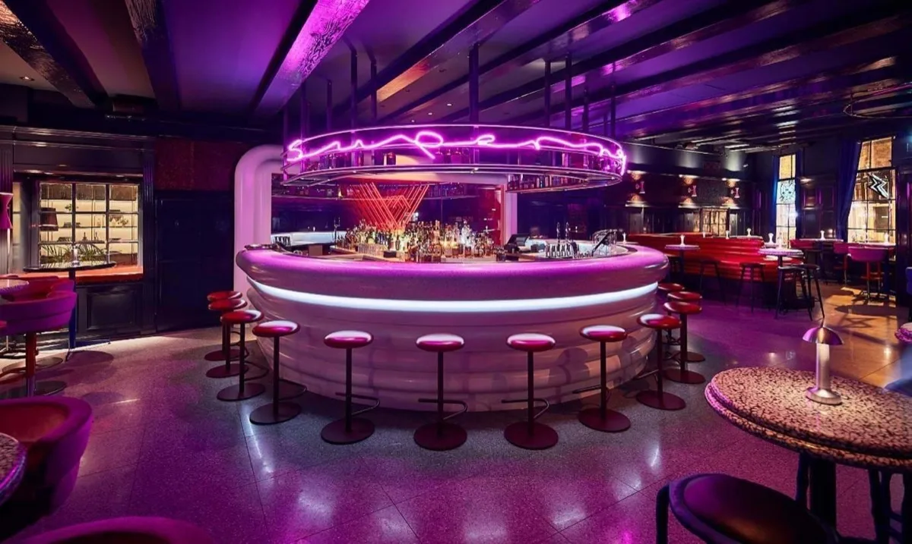
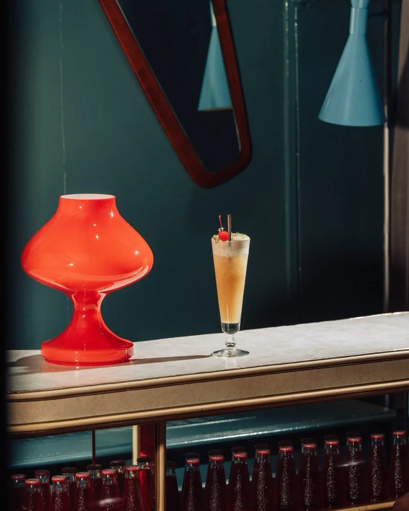
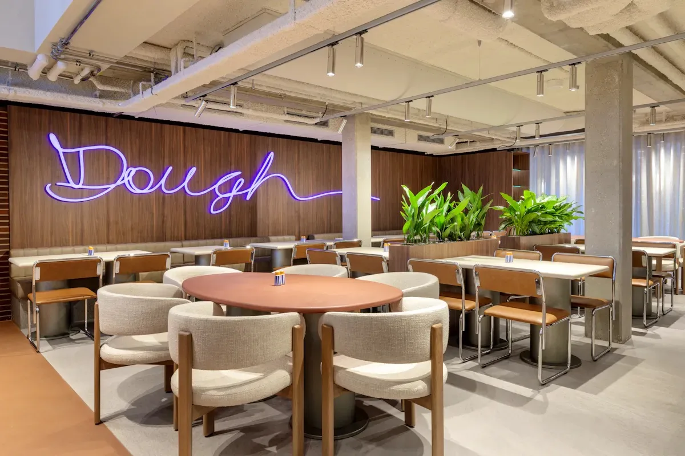
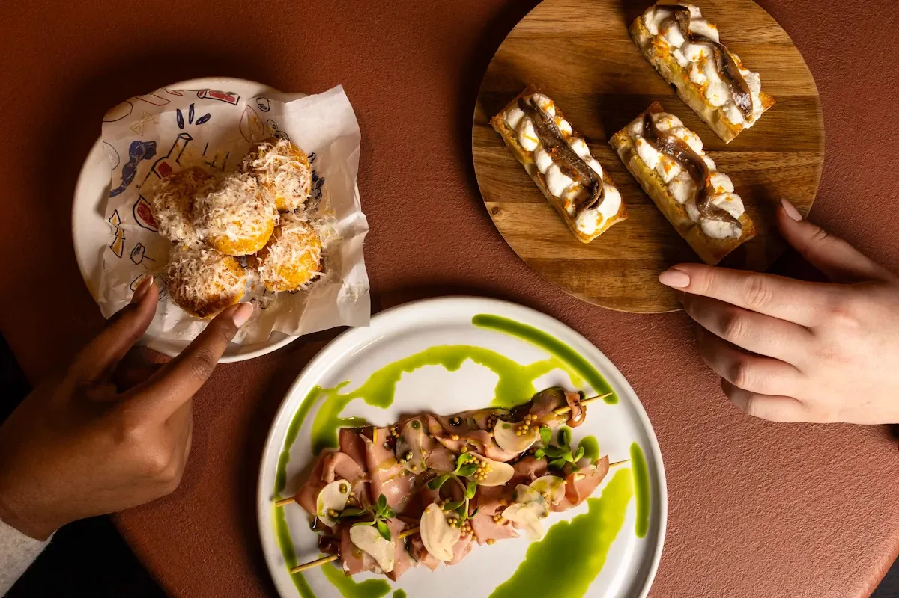

The easy favourite / Centrum · near Centraal
Bright drinks. Wood-fired dinner.
The most effortless plan for five: a playful cocktail bar, a very short stroll, and a restaurant that lets everyone choose their own level of spend. Start early to unlock the €6 drinks.



Super Lyan
€ / €€Playful cocktails · Nieuwezijds Voorburgwal 3
Hotel-bar craft with neon, colour and a much more casual mood. The best-value way into this shortlist if everyone can make an early start.
- Budget
- €6 early / €16–17 regularOne cocktail. Selected Super Hours drinks are €6, 17:00–18:00; confirm the offer for your visit.
- Friday
- 17:00–01:00
Walk-ins for five. Arrive at 17:00 for the early offer and the best chance of sitting together.



Janine
€–€€Modern Italian · Hekelveld 10
Wood-fired pizza, pasta and a warm dining room behind the bakery. Easy to keep affordable with pizza, or make it a longer dinner with shared starters.
- Budget
- €25–45 dinnerEstimated food budget; pizzas listed from €16, main dishes around €26–32. Dinner drinks extra.
- Friday
- 12:00–22:00 restaurant
Reserve a table for five in the restaurant, rather than the daytime bakery.
A LITTLE ORDER INSPIRATION
Dark ’n Stormy →
Wood-fired pizza
Start with ginger, lime and rum, then go for a tomato-based pizza. A fresh, easygoing flavour progression; choose a new drink with dinner.
Dark ’n Stormy is listed in Super Hours; pizza is listed from €16. These are our suggestions for successive stops, not a venue pairing menu.
YOUR EVENING, ON FOOT
- Super Lyan
- 2–4 min walk, estimated
- Janine
A · Nieuwezijds Voorburgwal 3
B · Hekelveld 10
Open both stops in walking directions ↗
A Drinks B Dinner · pins show locations, not a plotted route.
Open walking directions ↗The early offer makes the value case. After 18:00, budget €41–62 for a regular cocktail and food. The bar is walk-in, so seating together is not guaranteed.
Why this pairing? 92/100 editorial fit
Our judgement, not a customer rating: atmosphere & food fit 45% (9/10), value 35% (9/10), walking convenience 20% (10/10). Friday opening and a workable dinner schedule are prerequisites. Approximate walks allow for street crossings; check live directions before setting off.